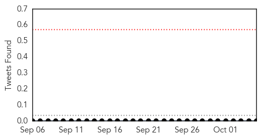
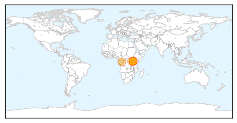
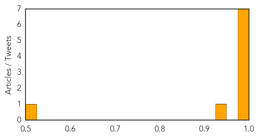

Mumps
30-Day Web Trend
0 alerts, 0 warnings
30-Day Twitter Trend
0 alerts, 0 warnings

Article Locations

Article Confidences

Top Articles:
-
No articles found for Oct 05, 2014
Top Tweets:
-
No tweets found for Oct 05, 2014
Hemmorhagic Fever
30-Day Web Trend
2 alerts, 0 warnings

30-Day Twitter Trend
0 alerts, 0 warnings

Article Locations
Article Confidences
Top Articles:
- 1.000
- The most from the coast
- 0.998
- Roundup: Deadly Marburg hemorrhagic fever breaks out in Uganda
- 0.998
- Deadly Marburg hemorrhagic fever breaks out in Uganda - Xinhua
- 0.995
- Uganda Tourism Health Alert: Marburg fever case confirmed
- 0.987
- Deadly Marburg hemorrhagic fever breaks out in Uganda
- 0.986
- 1st LD-Writethru: Deadly Marburg hemorrhagic fever breaks out in Uganda
- 0.982
- Over 60 health workers monitored after Marburg outbreak in Uganda
- 0.927
- Deadly viral fever breaks out in Uganda
- 0.509
- Public warned against Congo virus
Top Tweets:
-
No tweets found for Oct 05, 2014